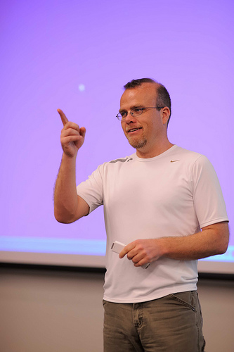

Rasmus Lerdorf nació en Groenlandia y vivió en Dinamarca gran parte de su niñez. Después de ello, se mudó con su familia a Canadá, donde se graduó en 1993 como Ingeniero en Diseño de Sistemas Informáticos en la Universidad de Waterloo. Lerdorf y su esposa Christine se mudaron de Toronto a San Francisco, Estados Unidos, donde Rasmus se unió a Linuxcare Inc. como investigador. Tras un breve paso por IBM, fue contratado desde septiembre de 2002 hasta noviembre de 2009 por Yahoo como ingeniero de arquitectura e infraestructura.
En 1994, Lerdorf quería saber cuántas personas estaban leyendo el currículum vítae en su página web y para ello creó un CGI en Perl que mostraba el resultado estadístico en la propia página. Lerdorf llamó a ese script PHP, acrónimo de Personal Home Page. Inmediatamente comenzó a recibir pedidos de muchas personas para obtener el pequeño programa y lo compartió con ellas. Creó una lista de correo para intercambiar opiniones, sugerencias y correcciones y como resultado de todo esto accedió a un puesto en la Universidad de Toronto para crear un sistema administrado por web para que los estudiantes se pudiesen conectar a Internet mediante acceso por marcación telefónica, con control de cuentas de acceso en base horaria y reflejando todos los datos en tiempo real sobre una base de datos.
Como no existía una herramienta de interfaz con las bases de datos, creó un conjunto de etiquetas adicionales para insertar dentro de los códigos HTML de las propias páginas, reemplazando los CGI en Perl. Cuando el producto estuvo maduro, si bien Lerdorf había creado la interfaz con la base de datos MySQL, otros programadores crearon conectividad con Oracle y Sybase.
Así cristalizó la idea de lanzar el PHP como una herramienta de software libre lo que llevó a que, con el aporte de la comunidad mundial, sea una herramienta de suma utilidad. Como el propio Lerdorf indica: "Yo solo puedo ayudarme a mí. Si todo el mundo usa el código que he escrito, con seguridad obtendré algo de él".

PHP es un lenguaje de programación destinado a desarrollar aplicaciones para la web y crear páginas web, favoreciendo la conexión entre los servidores y la interfaz de usuario. Además, es de código abierto, por lo que está en constante perfeccionamiento gracias a su comunidad de desarrolladores.
Puede ser desplegado en la mayoría de los servidores web y en todos los sistemas operativos y plataformas sin costo alguno. De hecho, el lenguaje PHP se encuentra instalado en más de 20 millones de sitios web y en un millón de servidores.